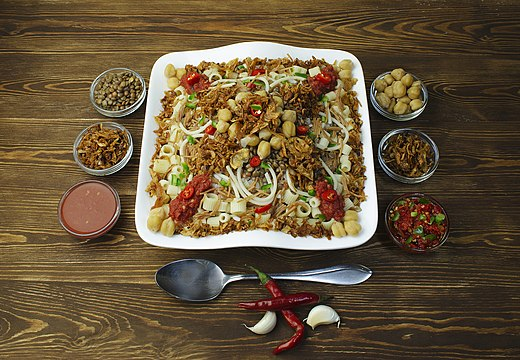

Koshary
Koshary is one of the most famous Egyptian popular dishes. It consists of pasta, rice, black lentils, fried onions, and tomato sauce, i.e. hot and fried tomatoes. Koshary is considered a low-cost, high-calorie meal with oxidized vegetable oils due to frying, which raises a lot of health criticism about the meal and the like.
fool and taameya
Falafel likely actually started in Egypt, and one theory says that Coptic Christians invented it about 1,000 years ago, while another theory says that it dates back to the time of the Pharaohs and from there it spread to the Levant.